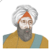
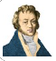

Most Famous Scientists and Inventors in History
The beginnings of science and the scientific method largely came
from the ancient Greek world, which encompassed the eastern part of
the Mediterranean. The names of the great scientists and
philosophers of that time, such as Pythagoras, Archimedes,
Aristotle, Eratosthenes and Thales, are still known today, over
2,000 years later.
The Era of Modern Science Begins
Science entered a new era with the Renaissance, which began in 14th
century Italy. By the 17th century it had extended and blossomed
throughout most of Europe. The fall of Constantinople in 1453
resulted in a large number of refugees fleeing to Europe, bringing
with them Greek and Roman books that had been archived in
Constantinople, unused for centuries. This, and the invention of the
printing press in about 1450 accelerated the pace of learning in
Renaissance Europe. Unfortunately for science, only a few people
thirsted for scientific knowledge and progress, while most
intellectuals focused on artistic or liberal arts disciplines. It
was only in the 17th century that a rapid scientific revolution
finally took place.
Top Physicists
Here’s our alphabetical list of the most popular physicists, or
contributors to physics, on the Famous Scientists website, ordered
by surname.

AlhazenAlhazen c. 965 – c. 1040.
Explained why camera images are upside down; solved ‘Alhazen’s
problem’ concerning reflection of light from curved surfaces.
luis alvarezLuis Alvarez 1911 – 1988.
The iridium layer, dinosaur death by meteorite impact, and
subatomic particle discoveries.

andre-marie ampereAndré-Marie Ampère 1775 – 1836.
Discovered that wires carrying electric current can attract and
repel magnetically; founded electromagnetic theory.
Carl AndersonCarl Anderson 1905 – 1991.
Proved the existence of antimatter with his discovery of the
positron; discovered the muon.
archimedesArchimedes c. 287 BC – 212 BC.
Founded the sciences of mechanics and hydrostatics, calculated pi
precisely, devised the law of exponents, created new geometrical
proofs, invented numerous ingenious mechanical devices and more.